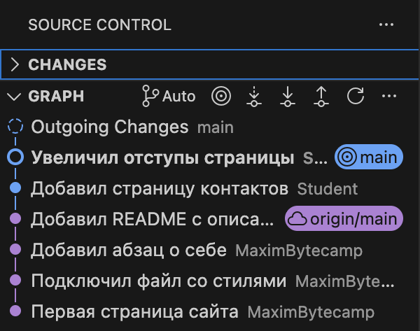
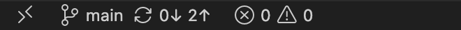
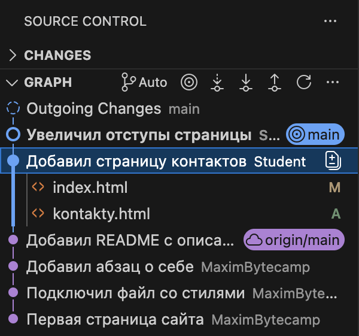
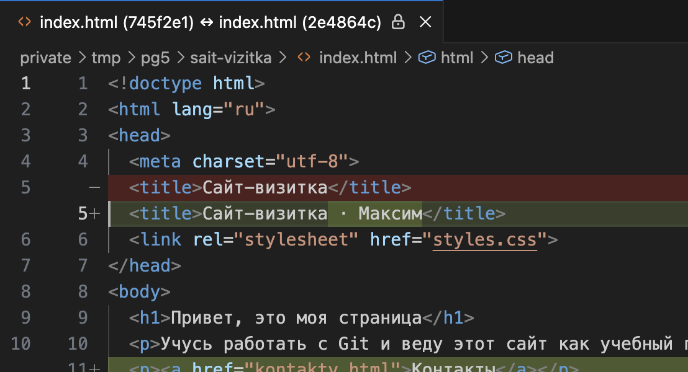
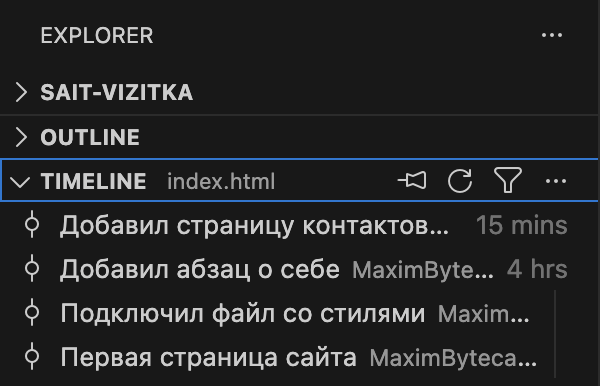
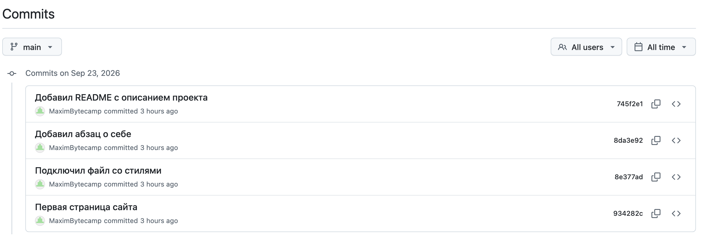
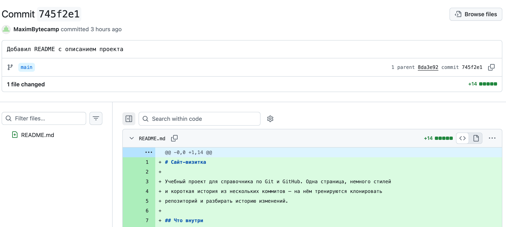
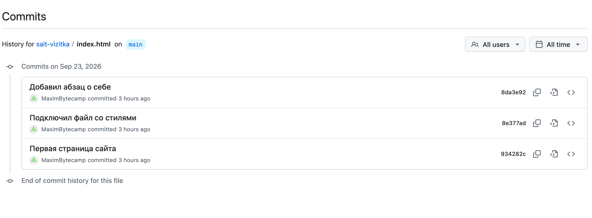
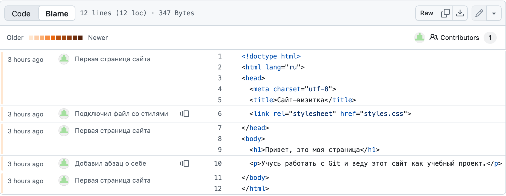

Справочник по Git и GitHub · модуль 2 · первый репозиторий в VS Code
Глава 2.4
История проекта:
граф, коммиты, авторы строк
Коммиты сделаны, дальше их нужно уметь читать. В главе показано, где лежит история в VS Code и на GitHub, что видно внутри одного коммита и как отобрать только те коммиты, которые меняли нужный файл. В конце — как узнать, кто написал конкретную строку и зачем.
- Категория
- Чтение истории
- Уровень
- Начальный
- Что получится
- Умение найти нужный коммит и автора любой строки
- Сколько занимает
- Около двадцати минут за компьютером
§1Зачем читать историю
К истории обращаются, когда нужно понять, что происходило с проектом и почему он стал таким. В работе это требуется постоянно:
Зачем это нужно в работе
- Найти, когда всё сломалось. Вчера страница работала, сегодня нет. По истории видно, какие коммиты были между этими моментами, и какой из них всё испортил.
- Понять чужой код. Строка выглядит странно, трогать боязно. История показывает, кто её написал и в каком коммите, — а сообщение объясняет зачем.
- Вернуть удалённое. Файл удалили месяц назад, теперь он понадобился. Он есть в истории: её и открывают, чтобы достать нужную версию.
- Отчитаться о работе. Список коммитов за неделю — готовый ответ на вопрос «что сделано», с датами и подробностями.
Работаем на проекте sait-vizitka из прошлых глав. В нём шесть коммитов: четыре пришли вместе с клоном, два вы сделали сами в главе 2.3.
§2Шаг 1. Открыть раздел Graph
Что делаем. Открываем панель Source Control. Под списком изменений есть второй раздел — GRAPH. Если он занимает мало места, сверните раздел CHANGES щелчком по его заголовку.

Что означают метки. Синяя main отмечает коммит, на котором вы стоите сейчас. Фиолетовая origin/main — коммит, на котором остановилась копия проекта на GitHub. Между ними два коммита: они сделаны у вас и на сервер ещё не отправлены.

2↑ — два коммита ждут отправки. Как их отправить, разберём в модуле 4.Строка Outgoing Changes в самом верху графа — это те же два неотправленных коммита, собранные вместе.
§3Шаг 2. Посмотреть, что внутри коммита
Что делаем. Нажимаем на коммит Добавил страницу контактов. Строка раскрывается, под ней появляется список файлов, которые в этот коммит вошли.

Так проверяют состав коммита: попало ли в него всё нужное и не уехал ли вместе с работой случайный файл.
§4Шаг 3. Открыть изменения построчно
Что делаем. Дважды щёлкаем по файлу внутри коммита. Открывается то же окно сравнения, что и в прошлых главах. Разница в том, что сравниваются два коммита, а не папка с последней сохранённой версией.

745f2e1, справа — из коммита 2e4864c. Подсвечено то, что между ними изменилось.Два коротких набора букв и цифр — имена коммитов. Первое — предыдущий коммит, второе — тот, который вы открыли. Откуда берутся такие имена, разберём в следующем параграфе.
§5Справка: имя коммита
У каждого коммита есть имя — длинная строка из букв и цифр, которую Git вычисляет по содержимому. Это хеш. В полном виде он выглядит так:
745f2e16ef3422f5063e9dde2af6036fc8349ffe
Целиком его не пишут: хватает первых семи символов — 745f2e1. Такие короткие имена вы уже видели в графе, в списках и в заголовке окна сравнения.
| Где встречается | Как выглядит | Что с ним делают |
|---|---|---|
Вывод git log --oneline | 745f2e1 | Копируют, чтобы открыть коммит или откатиться к нему |
| Заголовок окна сравнения | (745f2e1) ↔ (2e4864c) | Понимают, какие версии сравниваются |
| Страница коммита на GitHub | commit 745f2e1 | Дают ссылку коллеге — она ведёт прямо на этот коммит |
Вывод git blame | 8da3e92e | Смотрят, из какого коммита пришла строка |
Номера потребовали бы единого счётчика, а репозиториев с одной историей бывает много: у каждого участника своя копия. Хеш вычисляется из самого содержимого коммита, поэтому одинаковый коммит получает одинаковое имя на любом компьютере, а любая правка даёт другое имя.
§6Шаг 4. История одного файла
Возвращаемся к чтению истории. Граф показывает проект целиком, а разбираться обычно приходится с одним файлом — для этого есть отдельный список.
Что делаем. Открываем файл index.html, переходим в проводник (CtrlCmd + Shift + E) и раскрываем внизу раздел TIMELINE.

index.html: их четыре из шести. Справа — сколько времени прошло.Щелчок по строке открывает сравнение: каким файл был до этого коммита и каким стал после. Так находят момент, когда в файл попала ошибка.
§7Шаг 5. То же самое в терминале
Кнопки удобны, но в чужих инструкциях и на форумах историю показывают командами.
Вся история коротким списком. Ключ --graph рисует слева линию, по которой позже будут видны ветки:
* 7a74ca0 Увеличил отступы страницы * 2e4864c Добавил страницу контактов * 745f2e1 Добавил README с описанием проекта * 8da3e92 Добавил абзац о себе * 8e377ad Подключил файл со стилями * 934282c Первая страница сайта
История одного файла. Имя файла после двух дефисов оставляет в списке только те коммиты, где этот файл менялся:
2e4864c Добавил страницу контактов 8da3e92 Добавил абзац о себе 8e377ad Подключил файл со стилями 934282c Первая страница сайта
Это тот же список, что показал TIMELINE, — четыре коммита из шести.
Состав одного коммита. Команда git show с ключом --stat печатает, какие файлы затронуты и на сколько строк:
8e377ad Подключил файл со стилями index.html | 1 + styles.css | 11 +++++++++++ 2 files changed, 12 insertions(+)
Без --stat та же команда покажет изменения построчно — как окно сравнения, только текстом.
§8Шаг 6. История на GitHub
На сайте лежит та же история: сервер хранит копию ваших коммитов. Читать её удобно, когда проекта нет под рукой или нужно показать коллеге ссылку.
Что делаем. На странице проекта нажимаем счётчик коммитов (например, 4 Commits) — открывается список.

Открыть коммит. Щелчок по сообщению открывает страницу коммита: что изменилось, в каких файлах и на сколько строк.

745f2e1: 1 file changed, +14 — добавлено четырнадцать строк. Зелёным показано добавленное, красным было бы удалённое. Строка 1 parent ведёт к предыдущему коммиту.История файла. Открыв файл на сайте, нажмите кнопку History — останутся коммиты, которые меняли только его.

git log -- index.html. Разница только в том, где смотреть.§9Шаг 7. Кто написал эту строку
Ситуация из работы: в файле строка, которая мешает, но непонятно, зачем она. Удалять вслепую опасно. Нужно узнать, кто её добавил и в каком коммите.
Что делаем. Открываем файл на GitHub и переключаемся на вкладку Blame.

То же самое делает команда. Ключ -L ограничивает разбор нужными строками:
^934282c (MaximBytecamp 2026-09-23 03:58:04 +0300 9) <h1>Привет, это моя страница</h1> 8da3e92e (MaximBytecamp 2026-09-23 03:58:04 +0300 10) <p>Учусь работать с Git…</p> 2e4864c4 (Student 2026-09-23 07:21:50 +0300 11) <p><a href="kontakty.html">Контакты</a></p>
В каждой строке: имя коммита, автор, дата, номер строки и сама строка. Дальше по имени коммита открывают его целиком и читают сообщение — там написано, зачем изменение делалось.
Ассоциация: поля учебника с пометками
Вы берёте учебник, в котором писали несколько человек. На полях у каждой пометки подпись и дата: понятно, кто и когда её оставил, и можно спросить у автора, что он имел в виду.
Blame подписывает каждую строку файла: коммит, автор, дата. По имени коммита открывается сообщение автора — объяснение, зачем строка появилась.
Где не совпадаетПометка на полях остаётся рядом с текстом, а blame показывает только последнее изменение строки. Если строку потом правил кто-то ещё, первым автором будет считаться он: чтобы докопаться до начала, придётся листать историю глубже.
§10Как искать нужный коммит
Когда коммитов десятки, пролистывать список бесполезно. Историю отбирают по файлу, автору, слову в сообщении или дате.
| Что ищем | В терминале | На GitHub |
|---|---|---|
| Коммиты, менявшие файл | git log --oneline -- styles.css | Открыть файл → кнопка History |
| Коммиты одного автора | git log --author=Student | Список коммитов → фильтр All users |
| Слово в сообщении | git log --grep=контакт | Поиск по репозиторию с фильтром type:commits |
| Последние пять коммитов | git log --oneline -5 | Первая страница списка коммитов |
| Что было за вчера | git log --since=yesterday | Список коммитов → фильтр All time |
Нашли подходящий коммит — дальше смотрят его состав (git show --stat или щелчок в графе) и решают, что делать. Возврат к прошлой версии разберём в главе 2.6.
§11Частые вопросы
.git на вашем компьютере. Граф, Timeline и git log работают без сети: сервер нужен только для обмена коммитами.origin/main, а внизу окна видно 2↑.§12Проверьте себя
В графе метка main стоит выше метки origin/main. Что это значит?
У вас есть коммиты, которых нет на сервере. Все коммиты между двумя метками сделаны локально и ждут отправки. Внизу окна это же показано стрелкой вверх с числом.
Страница перестала открываться. С чего начать разбор по истории?
Посмотреть последние коммиты: git log --oneline или раздел Graph. Затем открыть коммиты, сделанные после того момента, когда всё работало, и посмотреть их состав. Если ясно, какой файл виноват, — сузить список: git log --oneline -- имя-файла.
Чем Timeline отличается от раздела Graph?
Graph показывает всю историю проекта, Timeline — только те коммиты, которые меняли открытый файл. Это тот же отбор, что делает команда git log -- имя-файла.
В заголовке окна сравнения написано index.html (745f2e1) ↔ index.html (2e4864c). Что с чем сравнивается?
Версия файла из коммита 745f2e1 (слева, более ранняя) с версией из коммита 2e4864c (справа). Подсвечены строки, которые между этими двумя коммитами изменились.
Нужно узнать, зачем в файле появилась странная строка. Порядок действий?
Открыть файл на GitHub, вкладка Blame, найти строку и посмотреть коммит слева от неё. Затем открыть этот коммит и прочитать сообщение автора — там причина. Локально то же самое делает git blame имя-файла.
Почему у коммита имя вида 745f2e1, а не номер 5?
Имя вычисляется из содержимого коммита, поэтому не зависит от порядка и от того, на чьём компьютере коммит сделан. У каждого участника своя копия истории, и общий счётчик там не работал бы.
§13Шпаргалка по главе
раздел GRAPH — вся история
раздел TIMELINE — история файла
main — где вы сейчас
origin/main — где сервер
git log --oneline --graph
git log --oneline -- файл
git show --stat хеш
вкладка Blame на GitHub
git blame -L 9,11 файл
--author=имя
--grep=слово
--since=yesterday
хеш, первые 7 символов
745f2e1
Итог главы
История проекта читается в четырёх местах, и везде это одни и те же коммиты. Раздел GRAPH в панели показывает всю цепочку с метками main и origin/main; щелчок по коммиту раскрывает список файлов, двойной щелчок — построчные изменения. Раздел TIMELINE оставляет только историю открытого файла. Те же данные дают команды git log, git show и git blame. На GitHub история лежит на вкладке Commits, а вкладка Blame подписывает каждую строку файла именем коммита, из которого она пришла. Имя коммита — хеш, семи символов достаточно. В следующей главе разберём служебные файлы: как не тащить в историю мусор и как объяснить Git, что в репозиторий не должно попадать.
- Кадры и ответы команд получены на клоне учебного проекта sait-vizitka в Git версии 2.51.1.
- Разделы Graph и Timeline — документация VS Code, раздел Source Control.
- Ключи
git log,git showиgit blame— документация git-log, git-blame. - Устройство имени коммита — книга Pro Git.